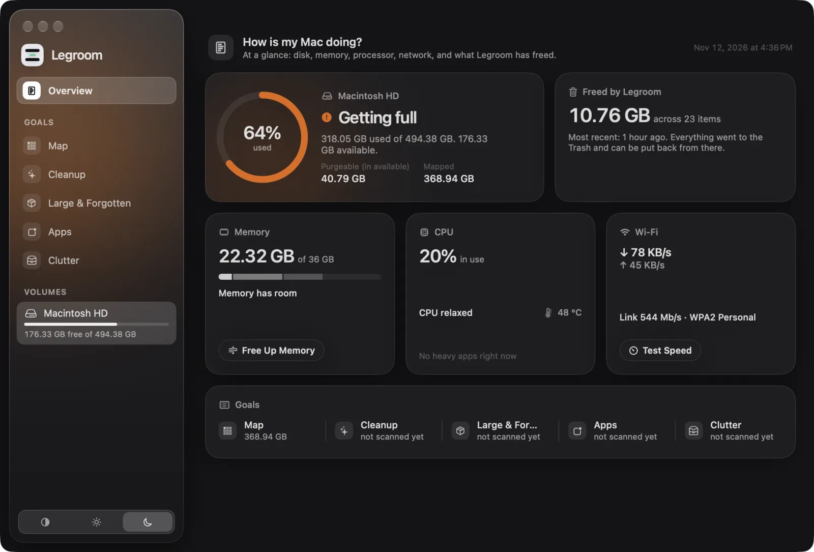
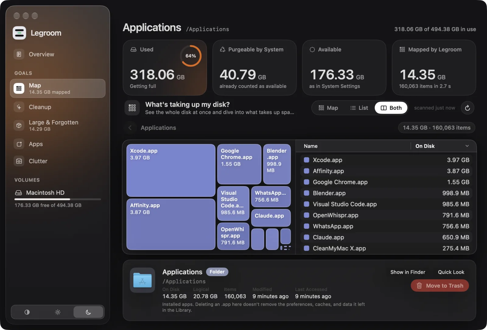
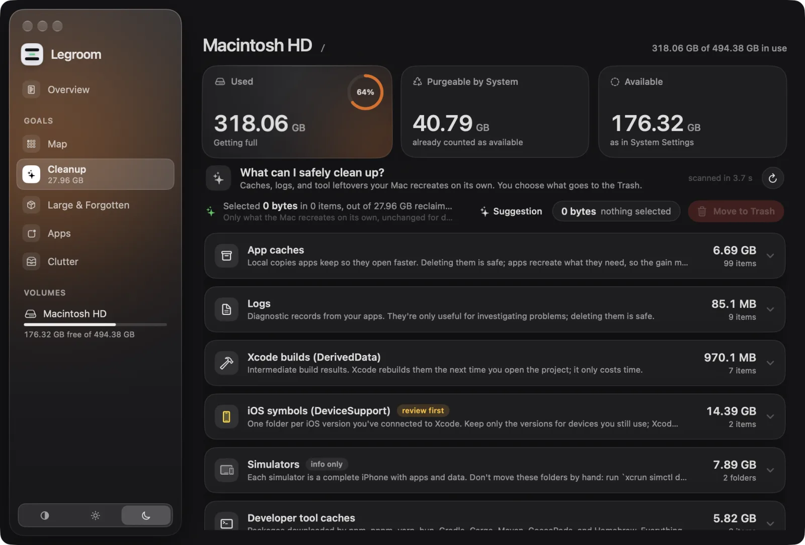
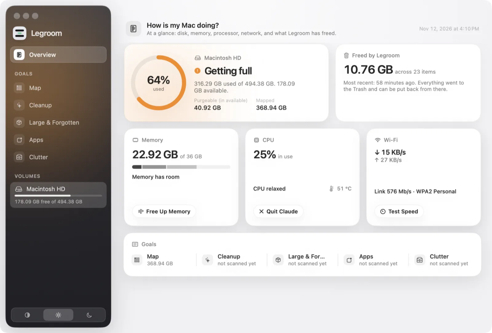

What's taking up my disk?
A full scan as a treemap and a list. The last scan is saved, so it reopens instantly next time.
See what's filling your disk, clean up what your Mac recreates on its own, and uninstall apps completely. Everything goes to the Trash. Nothing runs without you.

Each screen answers one thing you actually want to know about your disk — and reads only the folders it needs.
A full scan as a treemap and a list. The last scan is saved, so it reopens instantly next time.
Disk health, memory, CPU with chip temperature, network — and how much Legroom has freed.
Legroom finds what an app leaves behind — support data, caches, preferences, launch agents, even the installer in Downloads — and lets you review it first.
Caches, logs and developer leftovers your Mac rebuilds. Open JSON rules, each with a plain explanation.
Duplicates confirmed by content, downloads you never opened again, old installers and piles of screenshots.
A compact Overview in the menu bar, and widgets for the desktop and Notification Center.


Your Mac's built-in defenses, the result of Apple's own malware checks, and everything that opens on its own, grouped by who signed it. No alarms: it shows what runs and why something is worth a look, and you decide.
Native SwiftUI, light and dark, English and Portuguese.



Every scan starts when you ask. The main scan even needs a press-and-hold.
Nothing is deleted for good, and Legroom never empties the Trash.
Full path, size on disk, logical size, dates — and what well-known folders are.
No account, no analytics. The only request is the speed test, when you click it.
No helper running as root, no login items, no background agents. One native process.
▸ Map · full scan of / fts(3) · physical walk · allocated sizes 3,071,882 files · 368.94 GB · 2 min 31 s saved map: 3.97M nodes → 35 MB (LZFSE) ▸ Apps · uninstall Nod dev.nod.desktop + helpers · exact names only ~/.nod-desktop 4.83 GB ~/Library/Application Support/nod 1.88 GB ~/Downloads/nod-arm64.dmg 337 MB → 7 items, 8.1 GB moved to the Trash (never deleted)
fts(3), like duAllocated sizes, the space you actually get back. Hard links count once; APFS clones and sparse files show up.
Four million nodes in a compact binary tree, LZFSE-compressed. Reopens in about a second.
Notarized by Apple, updated with Sparkle and EdDSA-signed releases.
The code is open source
Legroom is MIT-licensed. Read how it works, open an issue, translate it into your language, or send a pull request.
Yes. No trial, no subscription, no in-app purchases. The code is on GitHub under the MIT license.
Legroom never deletes anything permanently: everything goes to the Trash, where you can put it back. It's signed with a Developer ID and notarized by Apple.
macOS hides some folders (Mail, Messages, some app containers) from every app. With Full Disk Access the scan is complete; without it, Legroom tells you what it couldn't read.
The App Store requires the sandbox, which makes a full disk scan, the process list and complete uninstalls impossible.
Legroom › Check for Updates…, or automatic checks if you allow them. Updates are the same notarized releases published on GitHub.